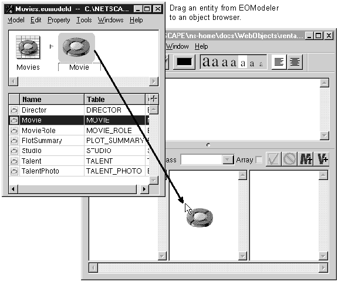
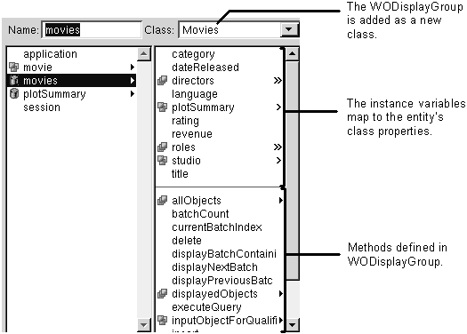

Table of Contents
Table of Contents
 Previous Section
Previous Section
Table of Contents
Previous Section
Choose Database Wizard from the Tools menu.
Follow the instructions provided in the wizard.
OR:
Drag an entity from the icon path in EOModeler to a component window, or drag the entire model file from the file system to a component window.


To write a WebObjects application that accesses a database, you need a WODisplayGroup. The WODisplayGroup can fetch, display, update, and search records in a database.
In most cases, you can create a database application using the Database Wizard. The wizard creates the WODisplayGroup, lays out the dynamic elements on the page, and creates bindings between the display group and the dynamic elements. After running the wizard, you have a working WebObjects application that fetches records from a database.
Note: You must run the database wizard from a component that's inside an application. That is, before you run the wizard, you must have created an application and that application must have at least one component.
If you need to do something more complex than the wizard provides, you can start by using the Database Wizard and then modify the results. If you don't want to use one of the wizard's layouts, you can create the application yourself.
If you create the application yourself, create the WODisplayGroup by dragging an entity from the EOModeler application. After you do this, you'll want to set display group options, and you'll have to bind elements to the display group. See "Setting Up a WODisplayGroup" and "Common WODisplayGroup Methods" for help.
Whichever way you add the WODisplayGroup, you get the following items with it:
 Next Section
Next Section